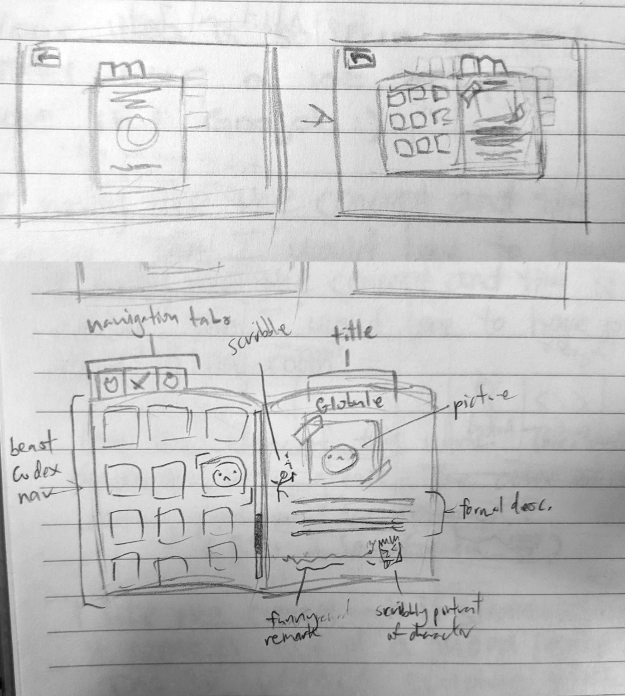

Star Crossed, formerly known as Arcaemi, is an upcoming and unique
Bullet-Hell Dating sim currently in production by Studi6 since
September 2023. It is an innovative fusion of Sci-Fi and Eldritch
Horror, set in a mysterious post-apocalyptic planet. I lead our team
which consists of 15 highly passionate members, with a single
individual assigned to oversee each aspect of game production: Art,
Programming, Design, Writing, and Music.
You crash land on this planet called Arcaemi, creating a huge crater
and ending up deep below the planet's surface. Now, you begin carrying
your ship, piece by piece, to the surface to fix it and leave the
planet. At each level you climb, there is a Guardian of the Old One
who wants to stop you. You can either talk them out of fighting and
onto your side (maybe even flirt with them…), or kill them!
INSPIRATION
In H.P Lovecraft mythos, there is a planet called “Yuggoth” that the
Old One is from. This is what we are basing Star Crossed off of. We
want to go for a more scientific approach to magic, like
technomagical.
ART
We have decided on a 2D Pixel art style with a theme of finding beauty
in the terrifying and mysterious unknown. To begin our process, we
created an artboard with all our references and artwork.
CHARACTER DESIGN
Our main protagonists consist of Deuce, a swanky and witty scavenger
with loose morals, and Marija, an ex-military technician who is also
Deuce's sister. Seen below is their character design from Arthur, our
Lead Artist.
BOSS DESIGN
As the main pinnacle and draw of our game, each boss has been
carefully designed to seductively appeal to all tastes. Below are more
concepts from Arthur.
ENEMY DESIGN
Enemies populate the levels of Arcaemi, acting as individual
challenges the player must defeat. Some possess twisted appearances
corrupted by the Old One, while others are grotesque fusions of
cybernetics and organic matter.
UI DESIGN
Early concepts have been made of the main gameplay screens.

MY TEAM ROLE
As the leader of Studi6, I act as the "team mom" to guide production
while supporting each team member's vision. Since most members are new
to game development, I provide insightful solutions to challenges and
educated feedback with my comprehensive experience. My most important
goal is to create a fun and enthusiastic environment for the team,
organizing team-building events, hangouts, and in-person brainstorming
sessions.